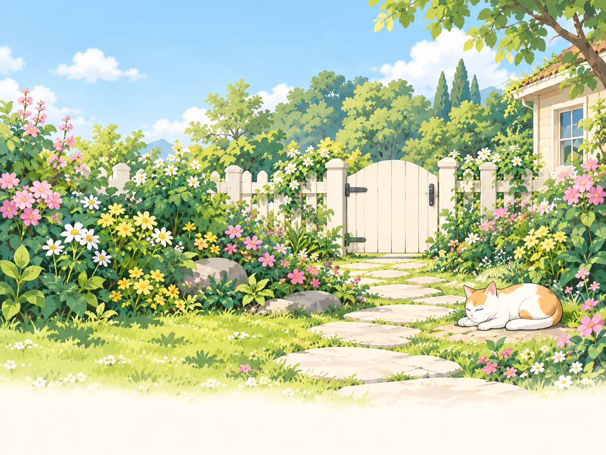
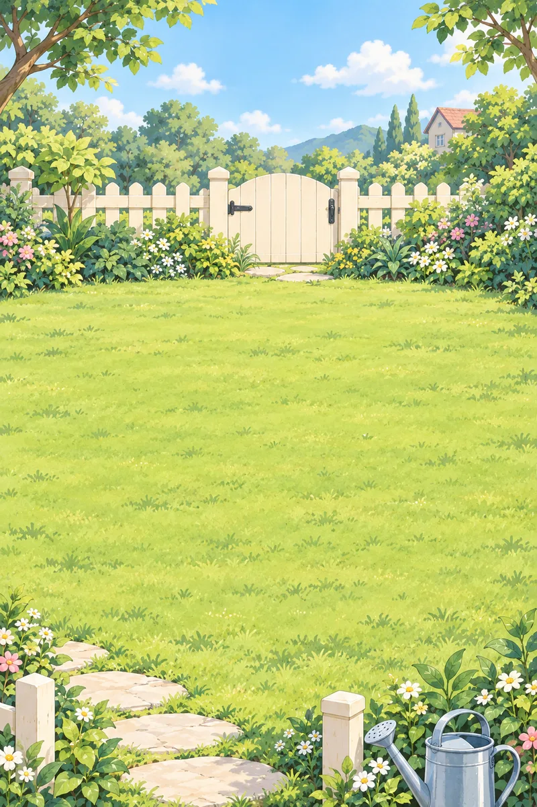
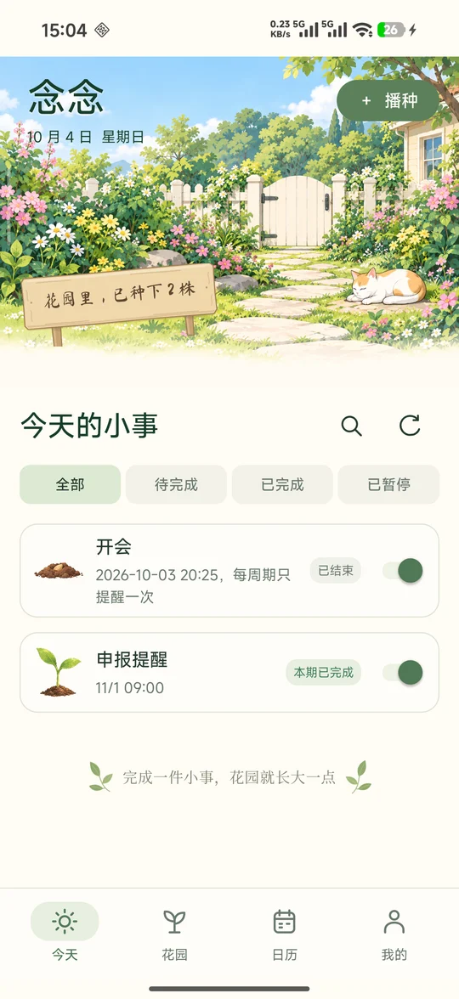
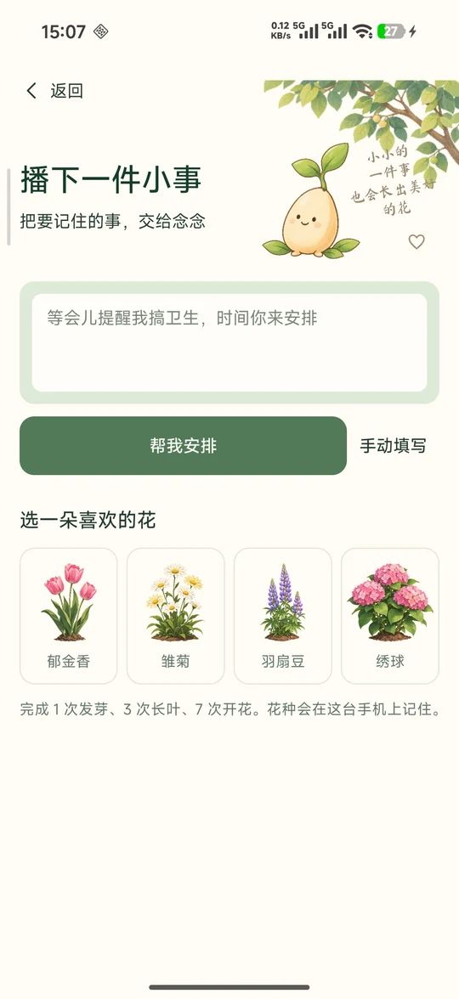
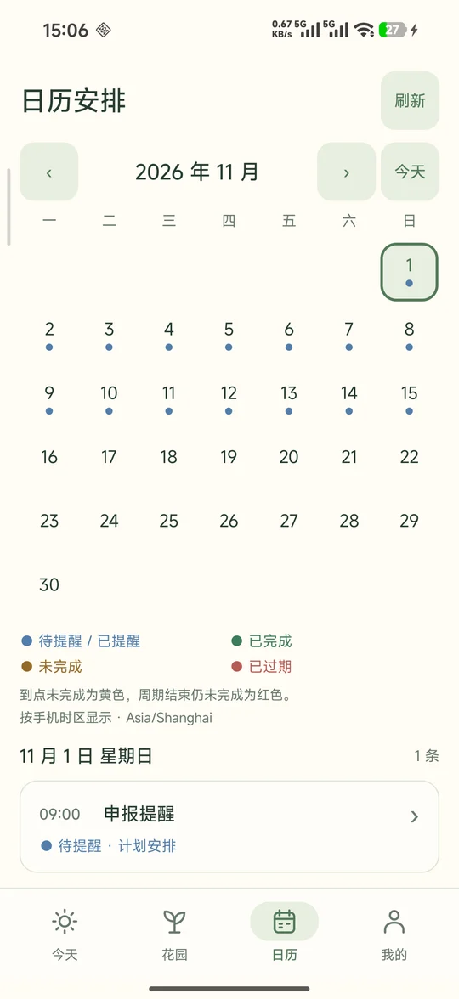

生活不必一下子变得井井有条
就从一件小事开始。
把惦记交给念念，把时间留给生活。
前往 GitHub 了解与获取 Android 客户端 + 自部署服务端 · 安装说明见仓库给忙碌的生活，留一片小花园
想做的事，说给念念听。
从帮你安排，到适时提醒，
每一次小小的完成，都能滋养自己的花园。
Android 应用 · AI 安排 · 按自己的节奏来

01 / 先说说，你想做什么
像平常说话一样告诉念念。AI 先给出安排和理由，
时间与规则都能再调整，确认后才开始提醒。
点选看看安排示例。这是网页演示，不会创建真实提醒。
收衣服
15 分钟后
先留一点时间做完手头的事，再提醒你去阳台看看。
用已开通的方式，提醒这件小事。
遵守你设置的间隔、次数和截止时间。
这一期的提醒结束，留下真实记录。
示意流程。实际渠道取决于你的授权与任务安排。

我的小小花园 互动演示浇下第一滴水，看看会发生什么。
03 / 小小的完成，也值得开花
完成小事，获得 3 滴水。
想照顾哪一株，就浇给哪一株。
从一颗种子，到属于你的花园。
12 种花，先认识其中 4 位
慢一天也没关系。不会枯萎，也不会清空成长。
这里可以免费试浇水；应用内每次浇水消耗 1 滴水。
04 / 日子走过，会留下痕迹
待办、日历、文字与照片。
把要做的事记清楚，也把做过的事留下来。



以上为早期版本实机画面，展示界面风格；当前提醒与花园规则以应用为准。
再多了解一点
收衣服、读书、拉伸、交材料、每月申报……一次性的小事、按日或按周重复的习惯、限定日期内做完的事务，都可以安排。复杂规则会先说明是否支持，草稿也能手动修改。
不用。通知、日历、闹钟都由你选择并授权，邮件也是可选项。后台执行还受系统权限、省电和厂商设置影响，可以在应用的提醒设置中检查，并分别测试通知与闹钟。
已提前同步到手机的有限通知与闹钟步骤，可以在有效期内离线执行；邮件和日历跟进仍需要联网。系统强行停止应用、关闭权限等情况可能中断提醒，重新打开应用后可恢复安排。
不会。漏做不扣成长，也不会让花枯萎。完成小事赚到的水滴可以浇给任何一株花，哪怕原来的任务已经结束。念念希望你慢慢积累，不用为偶尔的停顿自责。
念念目前是原生 Android 应用，需要配套服务端。本项目提供源码和自部署说明，可在下方进入 GitHub 查看。这个介绍网页不提供在线账号或提醒服务，也不会收集你的演示操作。